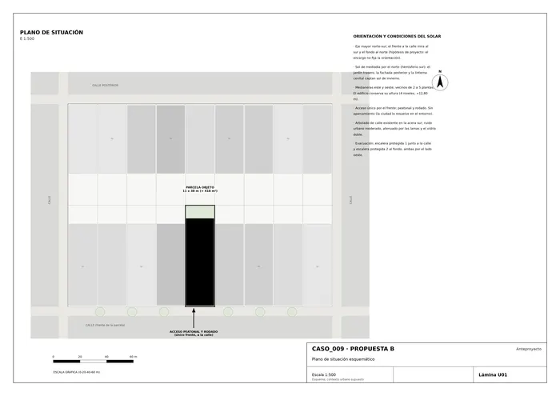
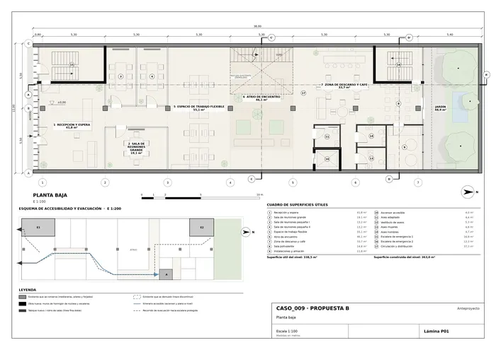
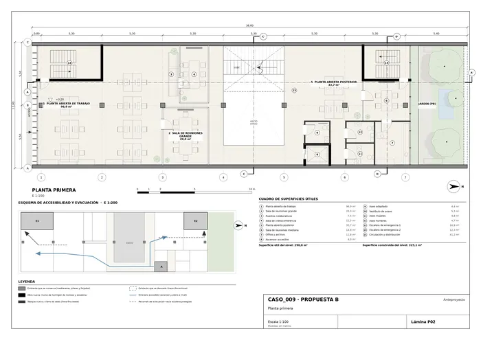
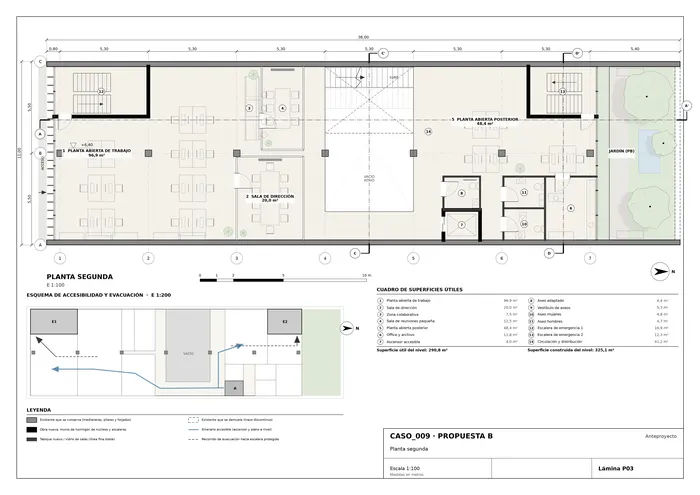
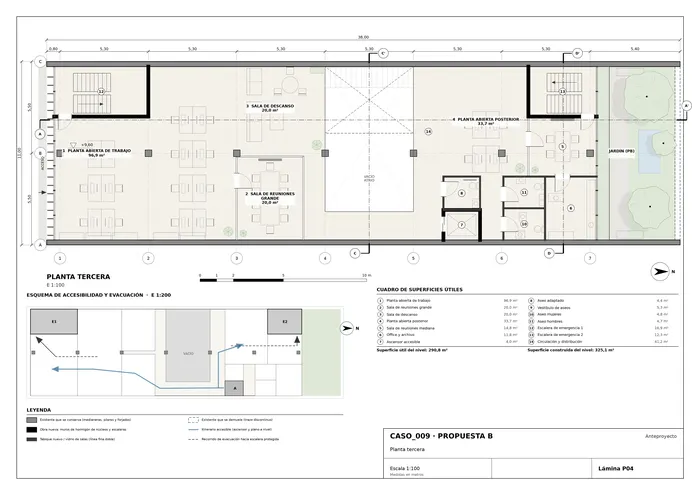
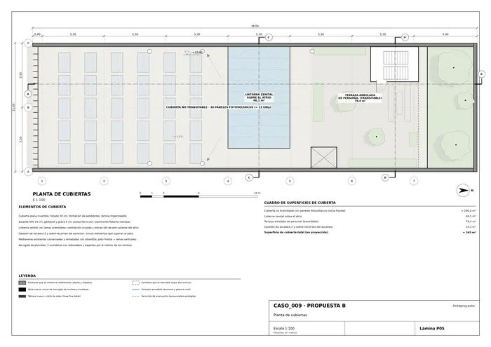
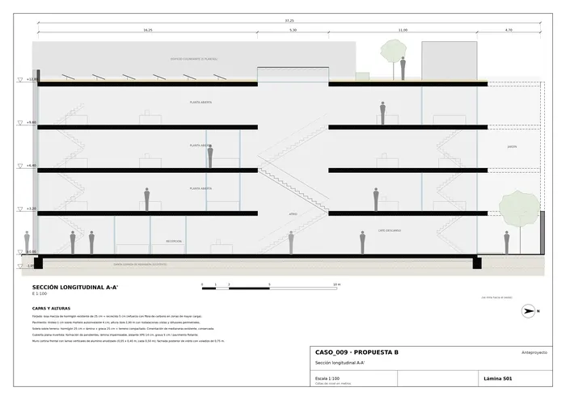
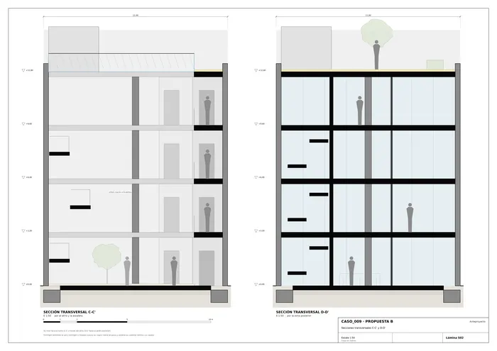
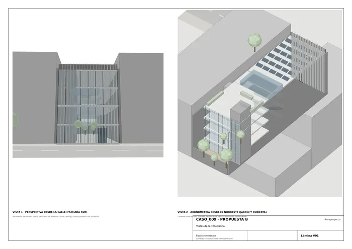
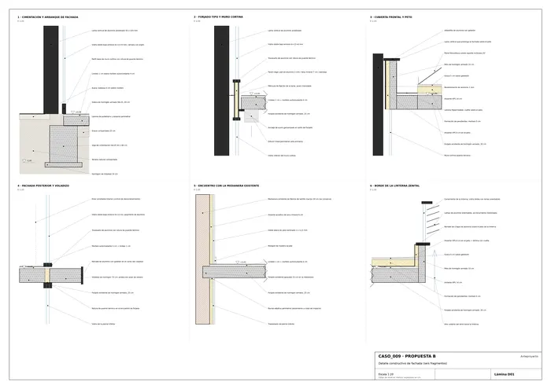

Caso 009 · Pedro Livni · 2018 · oficinas (renovación de edificio existente)
Idea: convertir el edificio en una "calle vertical". Un atrio zenital con escaleras en cascada atraviesa los cuatro niveles y trae luz al centro de una parcela de 11 × 38 m. El fondo húmedo y oscuro se libera como jardín orientado al sol, y el frente se filtra con lamas verticales.
Lectura 1, literal. Las líneas horizontales son forjados, las verticales son muros o pilares entre medianeras, las diagonales gruesas son tramos de escalera dentro de un hueco, y la mancha densa de trazos verticales es una piel de lamas junto a la fachada. Lectura 2, diagramática. Las horizontales son niveles de trabajo apilados. Las diagonales son recorrido y relación visual: un movimiento que une niveles y hace de la escalera el espacio principal. El bloque denso de verticales es un filtro entre la calle y el trabajo, y el espacio en blanco es luz. De ahí sale cuestionar un supuesto que el encargo no impone: que el edificio deba ocupar toda la parcela de medianera a medianera.
Hipótesis de proyecto (el encargo no las fija).
| 1. Patio central cerrado (literal) | 2. Cascada de terrazas al norte | 3. Atrio zenital + jardín trasero (elegido, diagramático) | |
|---|---|---|---|
| Programa (1.000–1.600 m²) | ≈ 1.250 m²; patio de 60 m² pierde superficie | ≈ 1.000 m²; los niveles altos pierden mucha área | 1.338 m² construidos, dentro de rango |
| Clima / sol | patio profundo (10 × 6 m), poco sol | muy buena captación solar, pero la volumetría se reduce | sol de invierno por el fondo norte y la linterna; sombra de verano por voladizos y lamas |
| Luz y ventilación | iluminación solo por patio y fachadas | buena | atrio + linterna: ventilación por efecto chimenea y luz hasta el centro |
| Relación con la calle | neutra | neutra | fachada de lamas y recepción visible: identidad |
| Normativa (acceso, evacuación) | difícil colocar una segunda escalera | recorridos largos | dos escaleras protegidas en los extremos, recorridos ≤ 25 m |
| Intervención sobre lo existente | media | alta (demoler la mitad del fondo en pisos) | moderada: conserva medianeras, pilares y forjados |
Descarto el 1 porque el patio central deja la mayoría de los puestos de trabajo lejos de la luz. Descarto el 2 porque pierde 25 % de superficie útil sin que el encargo pida terrazas. Elijo el 3, que además usa el boceto como ordenador del proyecto.
| Se conserva | Se demuele | Es nuevo |
|---|---|---|
| Medianeras, línea de pilares, forjados (reforzados), muro de fondo hasta 3,20 m, cimentación | Núcleo antiguo de escalera y ascensor; bahía trasera (5 m) en todos los niveles; tabiquería interior | Atrio y escaleras, linterna, muro cortina con lamas, fachada posterior con voladizo de 75 cm, núcleos de hormigón, jardín, tabiques y mobiliario |
Se conserva lo que sirve para mantener el edificio y su huella de carbono (estructura y medianeras). Se demuele lo que impedía la luz (el núcleo central) y lo que estaba peor orientado (el fondo, que pasa a jardín).
| Exigido | Propuesto | Cumple / desviación |
|---|---|---|
| Espacios de trabajo flexibles, con luz y ventilación | 4 plantas abiertas: PB 55,1; P1 96,9 + 33,7; P2 96,9 + 48,4; P3 96,9 + 33,7 = 461,6 m². Zonas colaborativas: 2 × 7,5 m². Unas 70 plazas | Cumple |
| Salas de reuniones de distinto tamaño | Grandes (19,1; 20,0 × 3): 4. Medianas 14,8 m²: 2. Pequeñas (13,2 × 2; 12,5 × 2): 4. Sala polivalente 14,8 m²: 1 | Cumple |
| Recepción accesible desde la vía pública | 1 recepción de 41,8 m², puerta doble de 1,50 m a cota 0,00 | Cumple |
| Aseos según normativa | 4 plantas × (mujeres 4,8 m², hombres 4,7 m², adaptado 4,4 m² con giro Ø 1,50) = 12 aseos | Cumple |
| Zona de descanso con espacio exterior o vegetación | Café 33,7 m²; atrio 46,1 m²; sala de descanso P3 20 m²; jardín 48,9 m²; terraza 79,4 m² | Cumple |
| Circulación vertical accesible | 1 escalera principal abierta de 1,20 m, 2 escaleras protegidas, 1 ascensor accesible (1,10 × 1,40 m de cabina) | Cumple |
| Aparcamiento (opcional) | No se proyecta | Desviación admitida: no es requisito y un frente de 11 m no admite rampa |
| Instalaciones y almacenaje | Cuarto de instalaciones PB 11,8 m²; 3 offices-archivo de 11,8 m²; sobrerrecorrido y casetón en cubierta | Cumple |
| Superficie construida 1.000–1.600 m² | 1.338 m² (PB 363,0 + 3 × 325,1); útil 1.211 m² | Cumple |
| Nº de unidades "a definir" | Los números por tipo están en las filas anteriores | Cumple |
| Patios o aberturas para iluminar y ventilar con ocupación elevada | Ocupación 87 %; atrio zenital de 46 m², jardín de 49 m² y dos fachadas acristaladas | Cumple |
| Alineación con la vía y altura de zona | El frente se alinea con la calle; se mantiene la altura existente de 12,80 m, entre vecinos de 2 a 5 plantas | Cumple |
| Accesibilidad universal | Itinerario a nivel, ascensor, aseo adaptado por planta, pasarela de 1,70 m | Cumple |
| Protección contra incendios y evacuación | Dos escaleras protegidas EI-60 en los extremos, recorrido ≤ 25 m, sector único de 1.338 m² con control de humos en la linterna | Desviación: la escalera 2 descarga en PB y debe cruzar el edificio (≈ 40 m) hasta la calle. Se compensa con vestíbulo protegido y detección. Cifras a validar con la norma local |
| Mejorar la relación con la calle e identidad contemporánea | Fachada de lamas de aluminio de 0,50 m de paso, recepción visible, planta baja transparente | Cumple |
| Decidir y justificar qué se conserva, demuele y añade | Tabla de la sección 2; plantas y secciones con el código de preexistencias | Cumple |
| Entregables: plantas, secciones, alzado y memoria | 5 plantas, 2 secciones, detalle 1:20, vistas, situación y memoria | Desviación: no hay alzado ortogonal. La fachada se define en la vista 1, la sección S01 y el detalle D01 |
Clima templado húmedo con verano cálido.

U01 · Plano de situación esquemático
P01 · Planta baja
P02 · Planta primera
P03 · Planta segunda
P04 · Planta tercera
P05 · Planta de cubiertas
S01 · Sección longitudinal A-A'
S02 · Secciones transversales C-C' y D-D'
V01 · Vistas de la volumetría
D01 · Detalle constructivo de fachada (seis fragmentos)Memoria de la propuesta tal como la entregó el sistema. Se han omitido las notas internas del proceso (revisiones, control de reconocimiento y referencias a archivos de trabajo).